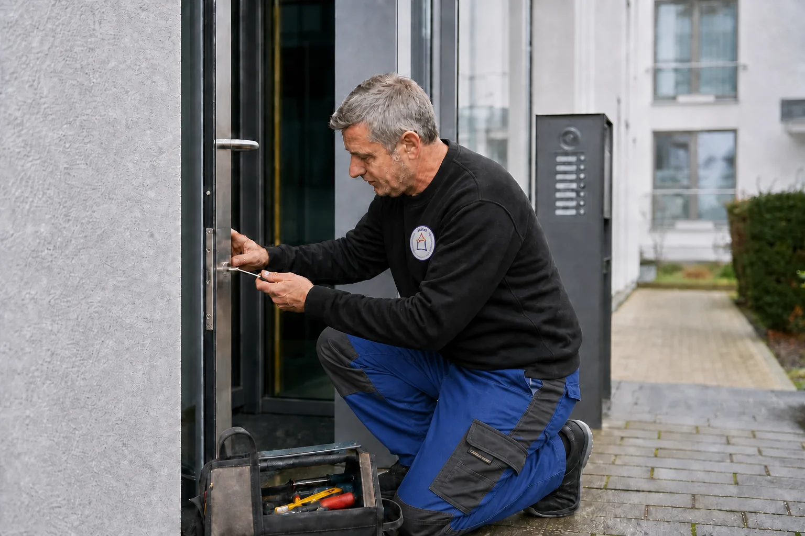
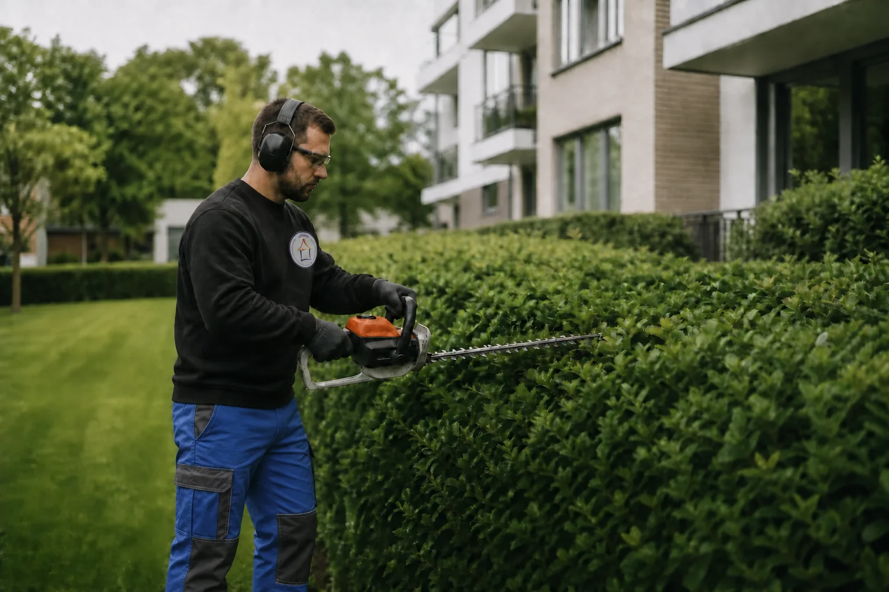
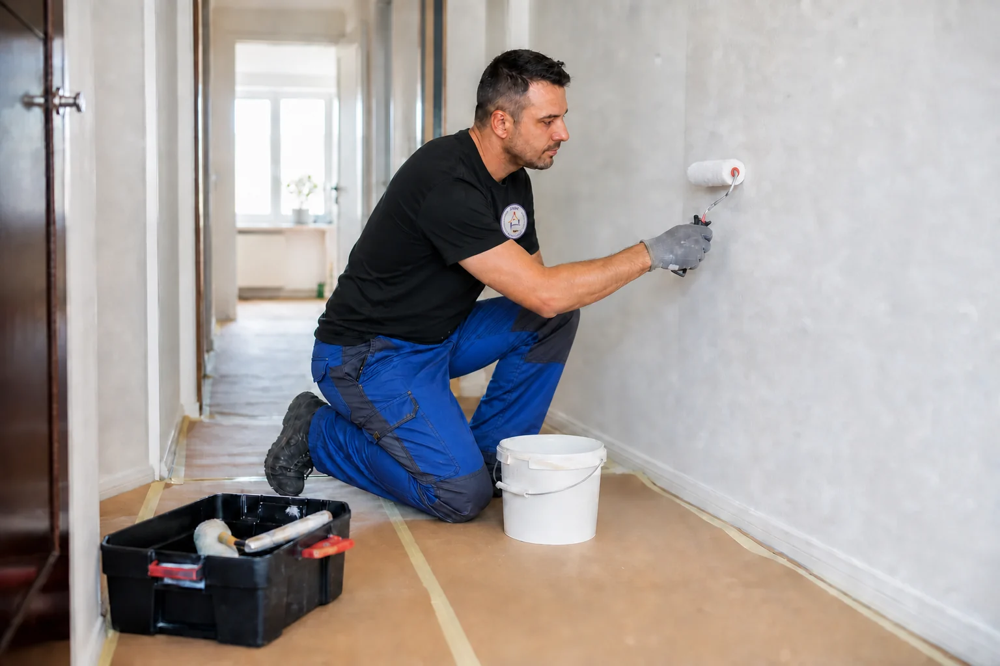
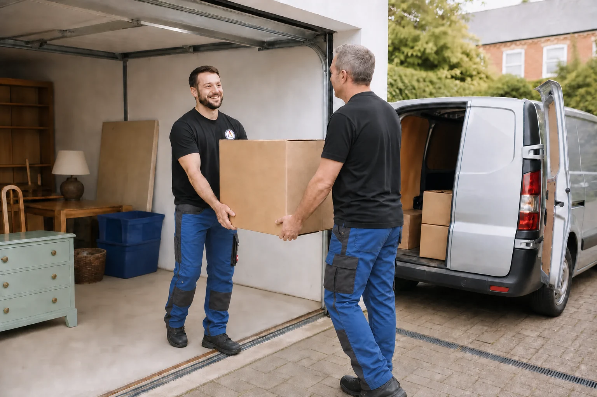
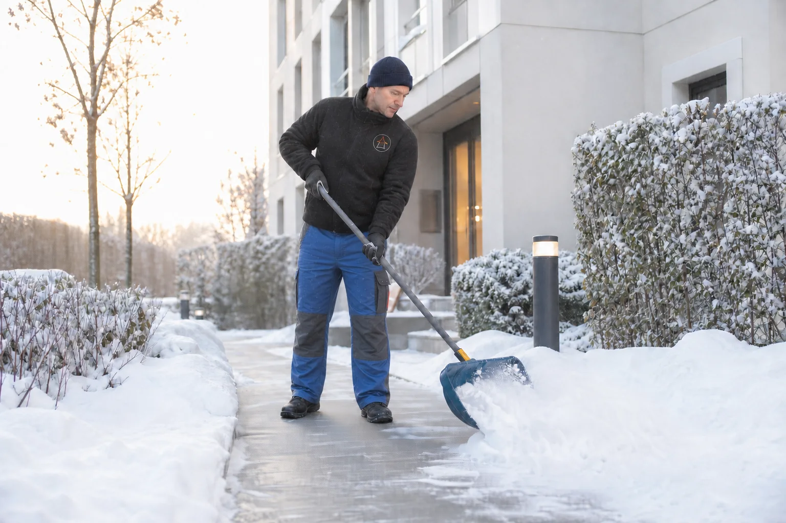
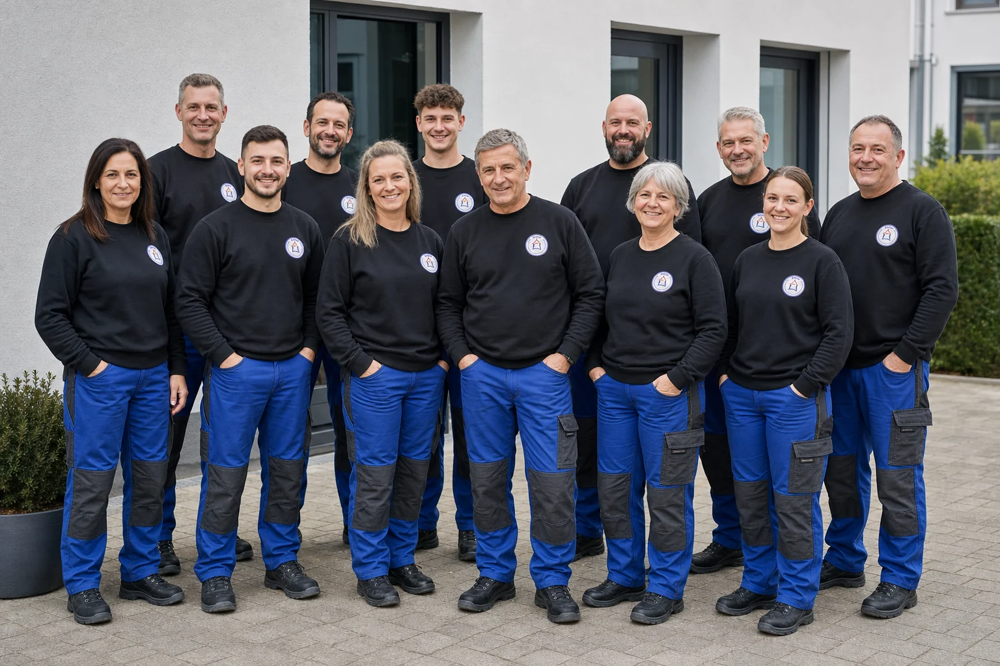

Hausmeisterzentrale Jüstel & Gebäudeservice GmbH & Co. KG
Ein Ansprechpartner.
Viele Leistungen.
Ein gepflegtes Objekt.
Ihr persönlicher Gebäudeservice für Immobilien, Außenanlagen und laufende Objektbetreuung – zuverlässig, vielseitig und ganzjährig.
Rundum-Service
Die unterschiedlichsten Arbeiten aus einer Hand
Ob Wohnanlage, Einfamilienhaus, Praxis, Büro oder Gewerbeobjekt: Wir übernehmen die unterschiedlichsten Aufgaben rund um Betreuung, Pflege und Werterhaltung Ihrer Immobilie. Dabei verbinden wir regelmäßige Objektkontrollen, Gebäudereinigung, Grün- und Außenanlagenpflege, kleinere Instandhaltungsarbeiten, Winterdienst sowie praktische Zusatzleistungen zu einem individuell abgestimmten Gesamtkonzept.
Für Sie bedeutet das weniger Organisationsaufwand und mehr Sicherheit im Alltag: Statt verschiedene Dienstleister einzeln zu beauftragen und zu koordinieren, erhalten Sie viele Leistungen zuverlässig aus einer Hand. Ein fester Ansprechpartner kennt Ihr Objekt, koordiniert die vereinbarten Arbeiten und sorgt für kurze Abstimmungswege, klare Zuständigkeiten und eine verlässliche Umsetzung.
Ganz gleich, ob Sie dauerhafte Unterstützung oder Hilfe bei einer einzelnen Aufgabe benötigen – wir richten Art, Umfang und Rhythmus unserer Leistungen nach Ihrem tatsächlichen Bedarf aus. So bleibt Ihre Immobilie gepflegt, funktionstüchtig und langfristig in einem guten Zustand.
Leistungen
Gebäudeservice, der im Alltag funktioniert
Wählen Sie einen Leistungsbereich für weitere Informationen.

Hausmeister- & Objektservice
Laufende Betreuung, Kontrollen und praktische Hilfe rund um Ihre Immobilie.
Mehr erfahren →
Gebäudereinigung
Zuverlässige Reinigung für Gebäude, Büros, Praxen, Treppenhäuser und Glasflächen.
Mehr erfahren →
Grün- & Außenanlagen
Pflege von Rasen, Gehölzen, Gärten und Außenflächen rund um Ihr Objekt.
Mehr erfahren →
Instandhaltung & Renovierung
Kleinreparaturen, Ausbesserungen und kleinere Renovierungsarbeiten aus einer Hand.
Mehr erfahren →
Entrümpelung & Zusatzdienste
Entrümpelung, Kleintransporte, Entsorgung und weitere praktische Zusatzleistungen.
Mehr erfahren →
Winter- & Straßenservice
Winterdienst und saisonale Arbeiten für sichere und gepflegte Wege und Flächen.
Mehr erfahren →
Unser Team sucht Verstärkung
Werden Sie Teil unseres familiären Teams und arbeiten Sie mit uns rund um Gebäude und Grundstück.
Jetzt informieren →Über uns
Familienbetrieb mit über 30 Jahren Praxiswissen
1992 wurde der Grundstein für die Hausmeisterzentrale Jüstel und Gebäudeservice GmbH & Co. KG gelegt. Seitdem hat sich der Familienbetrieb in Leegebruch als feste Anlaufstelle für Dienstleistungen rund um Gebäude und Grundstück entwickelt.
Unser Team vereint unterschiedliche Berufszweige des Dienstleistungsgewerbes. So können wir klassische Objektbetreuung, Reinigung, Außenpflege und viele ergänzende Arbeiten sinnvoll miteinander verbinden.
Für Sie bedeutet das: Statt mehrere Dienstleister koordinieren zu müssen, erhalten Sie einen persönlichen Rundum-Service aus einer Hand. Wir stimmen die Arbeiten auf Ihr Objekt und Ihren tatsächlichen Bedarf ab – von regelmäßig wiederkehrenden Aufgaben bis zur flexiblen Unterstützung bei einzelnen Projekten.
Ob Wohnung, Einfamilienhaus, Mehrfamilienhaus, Praxis oder Gewerbeobjekt: Unser Anspruch ist eine fachgerechte, effiziente und verlässliche Betreuung mit kurzen Abstimmungswegen. Hausverwaltungen, Unternehmen, Privateigentümer sowie private Kunden und Mieter profitieren dabei von einem festen Ansprechpartner und einem Team, das die unterschiedlichen Aufgaben rund um Gebäude und Grundstück gemeinsam lösen kann.
Instandhaltung ist Werterhaltung.
Einsatzgebiet
Oberhavel: Oranienburg, Leegebruch, Velten, Hennigsdorf und Umgebung
Wir betreuen Grundstücke und Immobilien in der Region Oberhavel. Zu unseren Kunden zählen Hausverwaltungen, Arztpraxen, Unternehmen, Privateigentümer sowie private Kunden und Mieter.
Kontakt
Direkt mit der Hausmeisterzentrale Jüstel sprechen
Sie haben eine konkrete Aufgabe oder suchen eine dauerhafte Objektbetreuung? Wählen Sie einfach den für Sie passenden Kontaktweg.
Hausmeisterzentrale Jüstel & Gebäudeservice GmbH & Co. KG
Eichenallee 39 b
16767 Leegebruch
Telefon: 03304 250784 (ggf. KI-Assistent)
Kontaktformular öffnen
| Tag | Vormittag | Nachmittag |
|---|---|---|
| Montag | 08:00–12:00 | 13:00–16:00 |
| Dienstag | 08:00–12:00 | 13:00–17:00 |
| Mittwoch | 08:00–12:00 | 13:00–16:00 |
| Donnerstag | 08:00–12:00 | 13:00–16:00 |
| Freitag | 08:00–13:00 | geschlossen |
| Samstag | geschlossen | |
| Sonntag | geschlossen | |
Persönliche Termine im Büro:
Damit wir uns ausreichend Zeit für Ihr Anliegen nehmen können, bitten wir für persönliche Besuche um eine vorherige Terminvereinbarung.